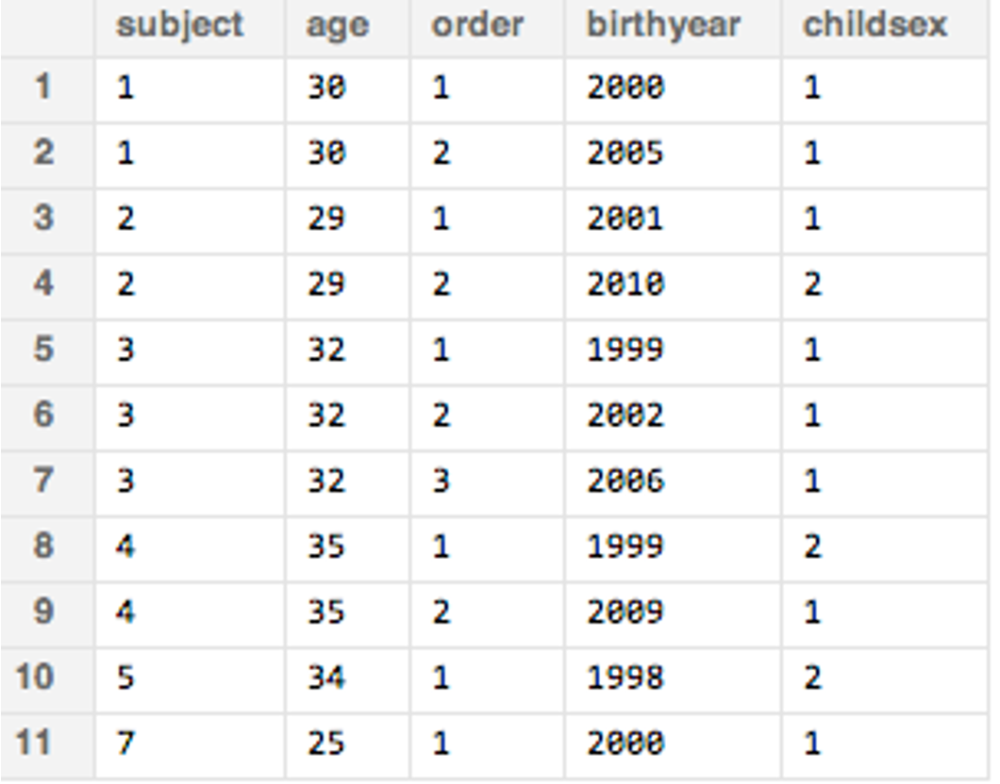
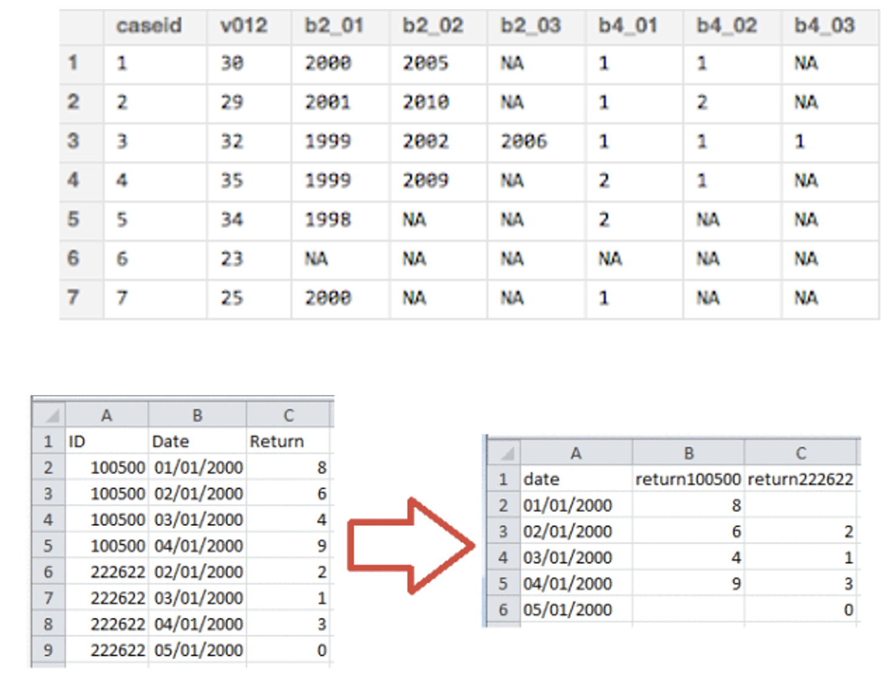
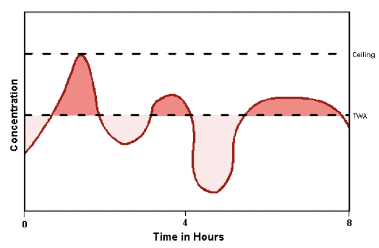

Moving from single shift to long term exposures (Lecture 18)
Click to view catchup R code
# set your working directory with `setwd()`!!# load packages we needlibrary(tidyverse) # data manipulation and plottinglibrary(readxl) # reading in our excel datasetlibrary(janitor) # cleaning columns names and morelibrary(lme4) # for mixed effects modelslibrary(lmerTest) # for # set the theme of all ggplots to `theme_minimal()`theme_set(theme_minimal())# read dataset excel file and make sure it's a tibble#### note new dataset file nameehs655_v2 <-read_xlsx("Dataset V2.xlsx") %>%as_tibble()# make all column names lowercase and snake_caseehs655_v2 <- ehs655_v2 %>%clean_names()# clean job title variable to remove misspellingsehs655_v2 <- ehs655_v2 %>%mutate(job_title =case_when( job_title =="Lborer"~"Laborer", job_title =="Laboerr"~"Laborer", job_title =="Electrican"~"Electrician", job_title =="Carpentr"~"Carpenter", job_title =="Operaing engineer"~"Operating engineer", job_title =="Ironworkr"~"Ironworker", job_title ==""~NA,.default = job_title))# clean gender variable to fix multiple classification schemesehs655_v2 <- ehs655_v2 %>%mutate(gender =case_when( gender =="M"~"Male", gender =="F"~"Female",.default = gender))# convert LEQ values <LOD to LOD/sqrt(2)ehs655_v2 <- ehs655_v2 %>%mutate(work_leq_d_ba =ifelse(work_leq_d_ba <70, 70/sqrt(2), work_leq_d_ba))# estimate time-weighted averages for each shiftehs655_v2 <- ehs655_v2 %>%mutate(TWA = work_leq_d_ba +10*log10(measured_shift_length_mins/480))# estimate peakiness for each shiftehs655_v2 <- ehs655_v2 %>%mutate(peakiness = lmax_d_ba_shift/work_leq_d_ba)# dropping bad cases of TWA and Lmax based on calibrationehs655_v2 <- ehs655_v2 %>%mutate(TWA =ifelse(post_cal_value_d_ba <113.5| post_cal_value_d_ba >114.5,NA, TWA)) %>%mutate(lmax_d_ba_shift =ifelse(is.na(TWA),NA, lmax_d_ba_shift))# keeping only good cases of 70 <= Lmax <= 140 dBA based on physical boundsehs655_v2 <- ehs655_v2 %>%mutate(lmax_d_ba_shift =ifelse(lmax_d_ba_shift <70,70, lmax_d_ba_shift)) %>%mutate(lmax_d_ba_shift =ifelse(lmax_d_ba_shift >140,140, lmax_d_ba_shift))# order perceived noise levels from low to highehs655_v2 <- ehs655_v2 %>%mutate(perceived_noise_level_shift =factor(perceived_noise_level_shift,levels =c("Low", "Moderate", "High")))# create binary noise exposure outcomeehs655_v2 <- ehs655_v2 %>%mutate(bin_TWA =ifelse(TWA >85, 1, 0)) # generate count of repeated samplesehs655_v2 <- ehs655_v2 %>%group_by(subject_id) %>%mutate(count_TWA =sum(!is.na(TWA))) %>%ungroup() # so R doesn't make all analyses by subject_id# compute average TWA for each subject## generate antilog of TWAehs655_v2 <- ehs655_v2 %>%mutate(pascals =10^(TWA/10))## generate average pascal for each subjectehs655_v2 <- ehs655_v2 %>%group_by(subject_id) %>%mutate(subject_pascals =mean(pascals, na.rm =TRUE)) %>%ungroup()## take log of subject-level pascalsehs655_v2 <- ehs655_v2 %>%mutate(subject_TWA =10*log10(subject_pascals))
What we’ll cover today
Our current exposure prediction models: shift-level
Where we need to get to: study-level
How to get from point A to point B
Exposure prediction model: shift-level
Dependent variable
Measured TWA noise exposure
Independent variable(s) – static or time-varying?
Demographic attributes?
Work characteristics?
Other?
Complication
Presence of repeated exposure measurements
Static exposure factors
Some exposure factors do not vary with time
Job title
Sex
Perhaps others?
Exposure predictions based on these factors are simplest
e.g., no variation over time
Time-varying exposure factors
Many/most exposure factors vary over time
Task
Perceived noise level
Site type
Exposures predicted from these factors more complicated
Need to account for variation over time
A moment on dataset format: long vs wide
Our dataset is long
Advantages
Optimal for single measurement per subject, all exposure factors static
Easily handles repeated observations, especially when n of observations differs between subjects
Disadvantages
Harder to connect multiple measurements to single outcome

Datasets: wide vs long
Advantages
Optimal if all subjects have same number of measures
Easier to connect multiple observations with single outcome
Disadvantages
Complicated if differing numbers of repeated measures
Can switch between wide and long
But won’t need to in this class

Our exposure estimates so far: primarily shift-level
Our exposure prediction models estimate exposure associated with individual with given set of predictor variables
In our case, an 8-hour TWA exposure level in dBA
Note: we did look at person-level exposures in assignment 4

Exposure prediction model: study-level
Take prediction model from shift-level and apply coefficients to estimate study-level exposures
Reminder: “shift” variables summarize single workshift, “study” variables summarize entire follow-up period
Complication: need to account for exposure/follow-up duration
Steps for creating study-level exposure predictions
STEP 1: Create workshift-level exposure model to predict workshift TWA, \(\hat{X}_{shift}\)
STEP 2: Use \(\hat{X}_{shift}\) coefficients from shift-level regression model to create \(\hat{X}_{study}\) study-level regression model
Extract coefficients from model (for those with missing TWA, we need to assign them the fixed intercept from the model, or global mean)
# store random interceptsranef_shiftlevel <-coef(mod_shiftlevel)[[1]]# convert random intercepts to tibbleranef_shiftlevel <-tibble(subject_id =as.numeric(rownames(ranef_shiftlevel)),intercept = ranef_shiftlevel$`(Intercept)`)ranef_shiftlevel
# merge model coefficients with our dataehs655_v2 <- ehs655_v2 %>%# bring in random interceptsfull_join(ranef_shiftlevel, by ="subject_id") %>%# assign global mean for those with missing TWAmutate(intercept =ifelse(is.na(intercept), fixef_shiftlevel[[1]], intercept)) %>%# bring in fixed effects for perceived noisemutate(coef_moderate = fixef_shiftlevel[[2]],coef_high = fixef_shiftlevel[[3]])
Step 2. Use shift-level model to estimate study-level exposure